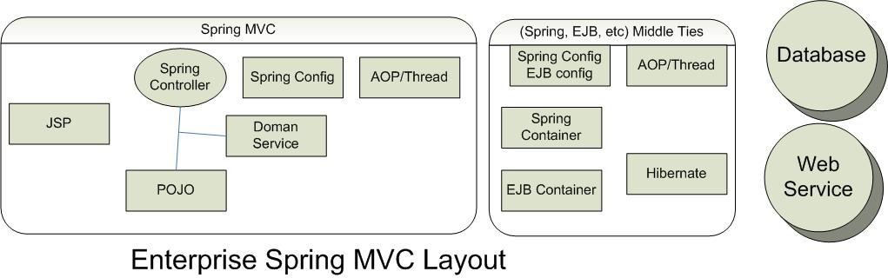

1.0
Table of Contents
- Overview
- 1. Basic Application and Environment Setup
- 1.1. Create the project directory structure
- 1.2. Create 'index.jsp'
- 1.3. Deploy the application to Tomcat
- 1.4. Check the application works
- 1.5. Download the Spring Framework
- 1.6. Modify 'web.xml' in the 'WEB-INF' directory
- 1.7. Copy libraries to 'WEB-INF/lib'
- 1.8. Create the Controller
- 1.9. Write a test for the Controller
- 1.10. Create the View
- 1.11. Compile and deploy the application
- 1.12. Try out the application
- 1.13. Summary
- 2. Developing and Configuring the Views and the Controller
- 3. Developing the Business Logic
- 4. Developing the Web Interface
- 4.1. Add reference to business logic in the controller
- 4.2. Modify the view to display business data and add support for message bundle
- 4.3. Add some test data to automatically populate some business objects
- 4.4. Add the message bundle and a 'clean' target to 'build.xml'
- 4.5. Adding a form
- 4.6. Adding a form controller
- 4.7. Summary
- 5. Implementing Database Persistence
- 6. Integrating the Web Application with the Persistence Layer
- A. Build Scripts
This document was written for developers who have worked with Java before and want to start developing GWT application and/or who already work on GWT and try to tune up the GWT application to run with high performance.
I have been working as a lead developer for the passed few years to design, develop framework and implement business functions for the high traffic, high volume and high competitive websites using GWT.
I try to turn on the reading of this book to be more hands on experience and will provide examples, some with in details. I also will list few real world difficulties/challenges regarding the design and implementation and how we address those.
Few words of GWT
Per Google definition [1]: Google Web Toolkit (GWT) is a development toolkit for building and optimizing complex browser-based applications. Its goal is to enable productive development of high-performance web applications without the developer having to be an expert in browser quirks, XMLHttpRequest, and JavaScript.
GWT makes it possible to create rich applicatoin easily. That means that the application created by GWT may attrictive website users to stay longer on the website and have more chance to relaize your website goal.
We performed split test which some percent users would use GWT website while rest users would use old website, the result is more optimie for GWT. The conversion rate of GWT website is high than the old site.
This is most promissing part I have experiecned, and it is the biggest advantage of using GWT. And it is the motivation I write this document.
Advantages:
- Increase conversion rate.
- Client code in Java, easy to debug.
- Object Oriented and well organized client code
- Remote Procedure Call Framework (AJAX)
- Abstracted from browser differences
- Javascript automatically optimized for performance with compilation
- Component Reusability with Inheritance
Disadvantages:
- Learning curve, it takes some time for a Java develop to master GWT.
- It is hard to train UI developer to use GWT as GWT put layout inside Java
code.
Recent uiBinder may solve this problem somewhat.
- Hard to find experienced GWT developer.
Reason one: there are few GWT developers in the market.
Reason two: GWT app do need experienced developer in order to develop high performance website.
Changllenges:
- GWT token: can not get GWT token in server side
- SEO: currently only Google officially provides a way to deal with SEO for the pages generated by GWT.
- Performance: The first load is slow, as when user access GWT website, the user will retrive the first html page from server, then nocache.js wil be invoked from user broswer, then load bworser specific cached html Javascript. So use will wait for three server request instead of one to get first page.
Others
- Per GWT implementation, GWT nocache.js is parsed after other js, either third party js
- As GWT process data in user browser, it is easy to make mistake to push too much data to make it load slowly, or parse slowly.
Promissing
- Avoid session timed out problem as normal web application. With properly design/implementation, the uer input data can be retained in client side, so it can re-construct user activities. That will increase usebility and in turn increase conversion rate.
- Preload static data per permuation and load data on compile time. That will increase runtime response time.
Overview of GoGWT
The website of www.gogwt.com is written for the demo purpose of how to wirte GWT, it simulates real world application: user searches for hotels after filling in the form with locatoin (address, airport code, or geocde), then select specific hotel from hotel search list, after fills in guest info (first name, last, email etc), the hotel will be reservated and user will get reservation number.
It has three versions:
- Spring MVC version
- GWT widget version
- GWT uiBInder, MPV version
Within this doc, I will talk about how to build same application with three different approaches, you will find the example how to use suggestion box, google maps, tabs etc.
For GWT application, I will introduce new approache of using defer binding to generate toekn manage. And will talk about of how to use hibernate and AOP.
Also, I will talk about how to tune the performance.
Spring MVC
I will brifly talk about Spring MVC, one reason it is the nessary part of GWT. I started to use Spring and Spring MVC few years ago. The basic concept of using was from that time. SInce it is working well during the years in production enviroment, I still use it.
Above diagram shows the layout used in GoGWT. For simplification. I remove the middle layer of Spring or EBS layer normally used in enterprise application.

GoGWT code is based on standard Maven structure, pom.xml is use to build and deploy applicatoin.
Spring MVC config file booking-servlet.xml, located in src/main/resources/conf, is defined in webapp/WEB-INF/web.xml
web.xml
<?xml version="1.0" encoding="UTF-8"?>
<web-app version="2.4"
xmlns="http://java.sun.com/xml/ns/j2ee"
xmlns:xsi="http://www.w3.org/2001/XMLSchema-instance"
xsi:schemaLocation="http://java.sun.com/xml/ns/j2ee http://java.sun.com/xml/ns/j2ee/web-app_2_4.xsd">
<servlet>
<servlet-name>booking</servlet-name>
<servlet-class>org.springframework.web.servlet.DispatcherServlet</servlet-class>
<init-param>
<param-name>contextConfigLocation</param-name>
<param-value>/WEB-INF/classes/conf/booking-servlet.xml</param-value>
</init-param>
<load-on-startup>1</load-on-startup>
</servlet>
</web-app>
booking-servlet.xml
<?xml version="1.0" encoding="UTF-8"?>
<beans xmlns="http://www.springframework.org/schema/beans"
xmlns:xsi="http://www.w3.org/2001/XMLSchema-instance" xmlns:aop="http://www.springframework.org/schema/aop"
xsi:schemaLocation="http://www.springframework.org/schema/beans
http://www.springframework.org/schema/beans/spring-beans-2.0.xsd http://www.springframework.org/schema/aop
http://www.springframework.org/schema/aop/spring-aop-2.0.xsd">
<!-- ========================= IMPORTS ============================== -->
<!-- model bean -->
<import resource="classpath:conf/domainService.xml"/>
<!-- dao bean -->
<import resource="classpath:conf/daoService.xml"/>
<!-- scope beans: session, flash -->
<import resource="classpath:conf/scopeBeans.xml"/>
<!-- GWT RPC remote call section -->
<import resource="classpath:conf/rpcConfig.xml"/>
<!-- pipeline mapping -->
<import resource="classpath:conf/pipeline.xml"/>
<!-- ========================= BEAN DEFINITIONS ============================== -->
<!-- bean lookup service -->
<bean class="com.gogwt.app.booking.utils.BeanLookupService"/>
<!-- ========================= VALIDATOR ========================= -->
<bean name="name=validator/reservation/SearchFormValidator"
class="com.gogwt.app.booking.controllers.validation.SearchFormValidator"/>
<bean name="name=validator/reservation/GuestInfoFormValidator"
class="com.gogwt.app.booking.controllers.validation.GuestInfoFormValidator"/>
<!-- ========================= INTERCEPTOR ========================= -->
<bean name="Booking:name=interceptor/config/URLHandlerInterceptor"
class="com.gogwt.app.booking.config.interceptor.URLHandlerInterceptor">
<property name="supportedLangRegion">
<map>
<entry key="en-US"><value>US English</value></entry>
<entry key="es-ES"><value>Español</value></entry>
</map>
</property>
<property name="controllerGWTConfigMap">
<map>
<entry key="gwtreservation"><value>conf/gwt/ReservationProcessConfig.xml</value></entry>
<entry key="mvpreservation"><value>conf/gwt/ReservationMVPProcessConfig.xml</value></entry>
<entry key="mvphoteldetail"><value>conf/gwt/HotelDetailMVPProcessConfig.xml</value></entry>
</map>
</property>
</bean>
<!-- ========================= INTERNAL RESOURCE RESOLVER ========================= -->
<bean name="localeResolver" class="com.gogwt.app.booking.config.resolver.BookLocaleResolver">
<property name="defaultLocale"><value>en_US</value></property>
</bean>
<!-- ========================= RESOURCE BUNDLE DEFINITIONS ========================= -->
<bean name="messageSource" class="org.springframework.context.support.ResourceBundleMessageSource">
<property name="basenames">
<list>
<value>com.gogwt.app.booking.resources.i18n.view.LabelResources</value>
<value>com.gogwt.app.booking.resources.i18n.error.ErrorResources</value>
<value>com.gogwt.app.booking.resources.i18n.misc.MiscResources</value>
</list>
</property>
</bean>
<!-- ========================= POPULATOR ========================= -->
<bean name="name=populator/StatePopulator" class="com.gogwt.app.booking.populator.StatePopulator"/>
<bean name="name=populator/TitlePopulator" class="com.gogwt.app.booking.populator.TitlePopulator"/>
<!-- ========================= CONTROLLER DEFINITIONS ========================= -->
<bean name="name=controller/common/ErrorController"
class="com.gogwt.app.booking.controllers.action.ErrorController"/>
<!-- HomeController" -->
<bean name="name=controller/reservation/HomeController"
class="com.gogwt.app.booking.controllers.HomePageController"/>
<!-- HotelSearchController -->
<bean name="name=controller/reservation/HotelSearchController"
class="com.gogwt.app.booking.controllers.action.HotelSearchController">
<property name="bindOnNewForm"><value>true</value></property>
<property name="commandName"><value>searchFormBean</value></property>
<property name="validator"><ref bean="name=validator/reservation/SearchFormValidator"/></property>
<property name="formView"><value>/reservation/search_form</value></property>
<property name="successView"><value>searchresult</value></property>
</bean>
<bean name="name=controller/reservation/HotelSearchResultController"
class="com.gogwt.app.booking.controllers.action.HotelSearchResultController"/>
<bean name="name=controller/reservation/GuestInfoController"
class="com.gogwt.app.booking.controllers.action.GuestInfoController">
<property name="populators">
<map>
<entry key="statePopulator"><ref bean="name=populator/StatePopulator"/> </entry>
<entry key="titlePopulator"><ref bean="name=populator/TitlePopulator"/> </entry>
</map>
</property>
<property name="bindOnNewForm"><value>true</value></property>
<property name="commandName"><value>guestInfoFormBean</value></property>
<property name="validator"><ref bean="name=validator/reservation/GuestInfoFormValidator"/></property>
<property name="formView"><value>/reservation/guest_info_form</value></property>
<property name="successView"><value>confirmed</value></property>
</bean>
<bean name="name=controller/reservation/ConfirmedController"
class="com.gogwt.app.booking.controllers.action.ConfirmedController"/>
<bean name="name=controller/property/HotelDetailController"
class="com.gogwt.app.booking.controllers.action.HotelDetailController"/>
<!-- ========================= GWT CONTROLLER ========================= -->
<bean name="name=controller/reservation/GWTHotelSearchController"
class="com.gogwt.app.booking.controllers.action.gwt.GWTHotelSearchController">
<property name="controllerName"><value>gwtreservation</value></property>
</bean>
<bean name="name=controller/reservation/GWTMVPHotelSearchController"
class="com.gogwt.app.booking.controllers.action.gwt.GWTMVPHotelSearchController">
<property name="controllerName"><value>mvpreservation</value></property>
</bean>
<bean name="name=controller/reservation/GWTHotelDetailController"
class="com.gogwt.app.booking.controllers.action.gwt.GWTHotelDetailController">
<property name="controllerName"><value>mvphoteldetail</value></property>
</bean>
<!-- ========================= URL MAPPING ========================= -->
<bean name="urlMappingPart2" class="org.springframework.web.servlet.handler.SimpleUrlHandlerMapping">
<property name="interceptors">
<list>
<ref bean="Booking:name=interceptor/config/URLHandlerInterceptor"/>
</list>
</property>
<property name="mappings">
<props>
<prop key="/**/home/**/">name=controller/reservation/HomeController</prop>
<prop key="/**/hotelsearch/**/">name=controller/reservation/HotelSearchController</prop>
<prop key="/**/searchresult/**/">name=controller/reservation/HotelSearchResultController</prop>
<prop key="/**/guestinfo/**/">name=controller/reservation/GuestInfoController</prop>
<prop key="/**/confirmed/**/">name=controller/reservation/ConfirmedController</prop>
<prop key="/**/hoteldetail/**/">name=controller/property/HotelDetailController</prop>
<prop key="/**/gwtreservation/**/">name=controller/reservation/GWTHotelSearchController</prop>
<prop key="/**/mvpreservation/**/">name=controller/reservation/GWTMVPHotelSearchController</prop>
<prop key="/**/mvphoteldetail/**/">name=controller/reservation/GWTHotelDetailController</prop>
<prop key="/**/errorPage/**/">name=controller/common/ErrorController</prop>
</props>
</property>
</bean>
<bean name="viewResolver" class="org.springframework.web.servlet.view.InternalResourceViewResolver">
<property name="viewClass"><value>org.springframework.web.servlet.view.JstlView</value></property>
<property name="prefix"><value>/jsp</value></property>
<property name="suffix"><value>.jsp</value></property>
</bean>
</beans>
Screen shots of Spring MVC GoGWT and explaination of the GoGWT functions.
URL: http://www.gogwt.com/gwtbooking/en-us/hotelsearch
Description: user fills in address and radius, then click Find A Hotel button. GoGWT server will first find geocode with Google Geocode service, then use that geocode to look at GoGWT database to find the hotels with the radius around that specific geocode. If found, save result to session with session manager, then redirect to searchresult page., else display error message.
Hibernate is used to invoke with database call.
URL: http://www.gogwt.com/gwtbooking/en-us/searchresult
Description: Once hotels are found, Google map API is applied to display hotels in Google Map. Also, hotel list is displayed under Google Map. Once user selects specific hotel by clicking Reserve button, the page will redirect to guestinfo page to get user's information.
URL: http://www.gogwt.com/gwtbooking/en-us/guestinfo
Description: Guest information is required in order to book the hotel. Once user fills in all fields, and click Confirm Reservation Button, GoGWT server will save data into database and redirect to next page.
URL: http://www.gogwt.com/gwtbooking/en-us/confirmed
Description: Reservation number, Guest Info and Hotel Information are displayed.
Spring Form Controllers Work Flow
This workflow describes how the Spring MVC Controller handles GET and POST requests. For more information, refer to the Spring MVC documentation.
Get Request
The controller receives a request for a new form (typically a GET). Refer to the com.gogwt.app.booking.controllers package for examples.
- Calls to formBackingObject() by default. This method returns an instance of the commandClass that has been configured (see the properties the superclass exposes), but can also be overridden to e.g. retrieve an object from the database (that needs to be modified using the form).
- Call to initBinder() which allows you to register custom editors for certain fields (often properties of non-primitive or non-String types) of the command class. This will render appropriate Strings for those property values, e.g. locale-specific date strings.
- Only if bindOnNewForm is set to true, then ServletRequestDataBinder gets applied to populate the new form object with initial request parameters and the onBindOnNewForm(HttpServletRequest, Object, BindException) callback method is called. Note: any defined Validators are not applied at this point, to allow partial binding. However be aware that any Binder customizations applied via initBinder() (such as DataBinder.setRequiredFields(String[]) will still apply. As such, if using bindOnNewForm=true and initBinder() customizations are used to validate fields instead of using Validators, in the case that only some fields will be populated for the new form, there will potentially be some bind errors for missing fields in the errors object. Any view (JSP, etc.) that displays binder errors needs to be intelligent and for this case take into account whether it is displaying the initial form view or subsequent post results, skipping error display for the former.
- Call to showForm() to return a View that should be rendered (typically the view that renders the form). This method has to be implemented in subclasses.
- The showForm() implementation will call referenceData(), which you can implement to provide any relevant reference data you might need when editing a form (e.g. a List of Locale objects you're going to let the user select one from).
- Model gets exposed and view gets rendered, to let the user fill in the form.
POST Request
The controller receives a form submission (typically a POST). Refer to the com.gogwt.app.booking.controllers package for examples.
- To use a different way of detecting a form submission, override the isFormSubmission method.
- If sessionForm is not set, formBackingObject() is called to retrieve a form object. Otherwise, the controller tries to find the command object which is already bound in the session. If it cannot find the object, it does a call to handleInvalidSubmit which - by default - tries to create a new form object and resubmit the form.
- The ServletRequestDataBinder gets applied to populate the form object with current request parameters.
- Call to onBind(HttpServletRequest, Object, Errors) which allows you to do custom processing after binding but before validation (e.g. to manually bind request parameters to bean properties, to be seen by the Validator).
- If validateOnBinding is set, a registered Validator will be invoked. The Validator will check the form object properties, and register corresponding errors via the given Errors object.
- Call to onBindAndValidate() which allows you to do custom processing after binding and validation (e.g. to manually bind request parameters, and to validate them outside a Validator).
- Call to processFormSubmission() to process the submission. It inspects the Errors object to see if any errors have occurred during binding and validation.
- If errors occured, the controller will return the configured formView, showing the form again (possibly rendering according error messages).
- If isFormChangeRequest is overridden and returns true for the given request, the controller will return the formView too. In that case, the controller will also suppress validation. Before returning the formView, the controller will invoke onFormChange(javax.servlet.http.HttpServletRequest, javax.servlet.http.HttpServletResponse, java.lang.Object, org.springframework.validation.BindException), giving sub-classes a chance to make modification to the command object. This is intended for requests that change the structure of the form, which should not cause validation and show the form in any case.
- initBinder() customizations are used to vny Binder customizations applied via initBinder() (such as DataBinder.setRequiredFields(String[]) wdefined
- If no errors occurred, the controller will call onSubmit using all parameters, which in case of the default implementation delegates to onSubmit with just the command object. The default implementation of the latter method will return the configured successView. Consider implementing doSubmitAction(java.lang.Object) doSubmitAction for simply performing a submit action and rendering the success view.
Form controllers are configured in the booking-servlet.xml definition. Refer to the booking-servlet.xml documentation in the bean definition section for more information.
Spring MVC components:
Following, I will list some components of Spring MVC and give example of how to use them.
Bean Creation
Spring define beans in xml file. GoGWT Spring configuration can be found in \src\main\resources\conf
Spring IOC or dependency injection mainly through Constructor Injection, Setter Injection. For most case, I use setter injection with no particular reason. However for this document, I change my code ofURLHandlerInterceptor to use construction. So URLHandlerInterceptor has both constuction and setter injection.
booking-servlet.xml bean definition:
<!-- ========================= INTERCEPTOR ========================= -->
<bean name="Booking:name=interceptor/config/URLHandlerInterceptor" class="com.gogwt.app.booking.config.interceptor.URLHandlerInterceptor">
<property name="supportedLangRegion">
<map>
<entry key="en-US"><value>US English</value></entry>
<entry key="es-ES"><value>Español</value></entry>
</map>
</property>
<constructor-arg index="0">
<map>
<entry key="gwtreservation"><value>conf/gwt/ReservationProcessConfig.xml</value></entry>
<entry key="mvpreservation"><value>conf/gwt/ReservationMVPProcessConfig.xml</value></entry>
<entry key="mvphoteldetail"><value>conf/gwt/HotelDetailMVPProcessConfig.xml</value></entry>
</map>
</constructor-arg>
<!-- repleace with above contruction IOC
<property name="controllerGWTConfigMap">
<map>
<entry key="gwtreservation"><value>conf/gwt/ReservationProcessConfig.xml</value></entry>
<entry key="mvpreservation"><value>conf/gwt/ReservationMVPProcessConfig.xml</value></entry>
<entry key="mvphoteldetail"><value>conf/gwt/HotelDetailMVPProcessConfig.xml</value></entry>
</map>
</property>
-->
</bean>
Bean Instance Retrieval
Bean instance is created inside application context. There are two ways to get bean reference:
- Through bean xml definition, bean is injected with IOC.
- Through bean lookup.
BeanLookupService.java is convinence class to lookup bean with bean name.
BeanLookupService
public class BeanLookupService extends ApplicationObjectSupport {
...
public static Object getBean(final String beanName) throws NoSuchBeanDefinitionException {
if (mApplicationContext == null) {
return null;
}
return mApplicationContext.getBean(beanName);
}
...
}
Example of using bean lookup, GoGWT has session bean scope ReservationSessionManager which contains value of user input such as location, radius, geocode, selected hotel etc. It is not convenience to inject to each class with ReservationSessionManager. Use bean lookup is applied when ReservationSessionManager is used.
SessionBeanLookupService
public class SessionBeanLookupService {
private static final String RESERVATION_MANAGER = "reservationSessionManager";
public static ReservationSessionManager getReservationSessionManager()
{
return (ReservationSessionManager)BeanLookupService.getBean(RESERVATION_MANAGER );
}
}
Interceptors
Spring MVC has the concept of interceptors that allow requests to the site to be incepted. A Spring interceptor will intercept every request and perform the required functions for the app. For more information, refer to the Spring web site (_http://static.springframework.org/spring/docs/2.0.x/reference/index.html_).
GoGWT URLHandlerInterceptor config for Spring MVC app.
<!-- ========================= INTERCEPTOR ========================= --> <bean name="Booking:name=interceptor/config/URLHandlerInterceptor" class="com.gogwt.app.booking.config.interceptor.URLHandlerInterceptor"> <property name="supportedLangRegion"> <map> <entry key="en-US"><value>US English</value></entry> <entry key="es-ES"><value>Español</value></entry> </map> </property> </bean> <!-- ========================= URL MAPPING ========================= --> <bean name="urlMappingPart2" class="org.springframework.web.servlet.handler.SimpleUrlHandlerMapping"> <property name="interceptors"> <list> <ref bean="Booking:name=interceptor/config/URLHandlerInterceptor"/> </list> </property> <property name="mappings"> <props> <prop key="/**/hotelsearch/**/">name=controller/reservation/HotelSearchController</prop> <prop key="/**/searchresult/**/">name=controller/reservation/HotelSearchResultController</prop> <prop key="/**/guestinfo/**/">name=controller/reservation/GuestInfoController</prop> <prop key="/**/confirmed/**/">name=controller/reservation/ConfirmedController</prop> ... </props> </property> </bean>
The GoGWT URLHandlerInterceptor will initialize and set any request attributes used by the application. The current functionality in the interceptor is the following:
- Parse the URL to get attributes of languageId, countryId, controllerName, contextPath, hotelId (if apply) etc mapping element and sets it as a request attribute with name "env". JSP will use JSTL of "env" varialbe to render the page.
- Get supportedLangRegion for support languages, currently GoGWT supports two languages en and es,
Multi-Language supports
Spring MVC supports multiplanguage with resouce bundle for each langauge, GoGWT use following config to handle language switches.
Locale Resolver
The locale resolver is used to determine the locale of the user. The locale is obtained by parsing the URL to obtain the country and language. Using the country and language, the locale is built and set into the request. The locale resolver class is com.gogwt.app.booking.config.resolver.BookLocaleResolver.
Spring MVC will access the resolveLocale() method on every request. The resolveLocale()method will build the locale by obtaining the country and language attributes from the request. If the country or language is not available in the request, the default locale is used.
The locale resolver is configured in the application context with the following:
GoGWT URLHandlerInterceptor config for Spring MVC app.
<!-- ========================= INTERNAL RESOURCE RESOLVER ========================= -->
<bean name="localeResolver" class="com.gogwt.app.booking.config.resolver.BookLocaleResolver">
<property name="defaultLocale"><value>en_US</value></property>
</bean>
<!-- ========================= RESOURCE BUNDLE DEFINITIONS ========================= -->
<bean name="messageSource" class="org.springframework.context.support.ResourceBundleMessageSource">
<property name="basenames">
<list>
<value>com.gogwt.app.booking.resources.i18n.view.LabelResources</value>
<value>com.gogwt.app.booking.resources.i18n.error.ErrorResources</value>
<value>com.gogwt.app.booking.resources.i18n.misc.MiscResources</value>
</list>
</property>
</bean>
Where the default locale is set to en_US.
To access the locale within the appli cation:
Java: MessageUtils has static methods with name of
getMessage(...) to get langauge specific message from resouce bundle. See
MessageUtils.java for detail.
JSP: JSP uses JSTL to access language specific message
from resource bundle, for example, see <fmt:message key='label.radius'/>
in search_form.jsp
Populators
Populators are used to pre-popuate items such as State, Title etc. The following steps to used to create a populator:
The populator class should implement the com.gogwt.app.booking.populator.Populator interface.
Take guestinfo page as example, this page contains two dropdown list, title and state.
<!-- ========================= POPULATOR ========================= -->
<bean name="name=populator/StatePopulator" class="com.gogwt.app.booking.populator.StatePopulator"/>
<bean name="name=populator/TitlePopulator" class="com.gogwt.app.booking.populator.TitlePopulator"/>
<!-- ========================= CONTROLLER ========================= -->
<bean name="name=controller/reservation/GuestInfoController"
class="com.gogwt.app.booking.controllers.action.GuestInfoController">
<property name="populators">
<map>
<entry key="statePopulator"><ref bean="name=populator/StatePopulator"/> </entry>
<entry key="titlePopulator"><ref bean="name=populator/TitlePopulator"/> </entry>
</map>
</property>
<property name="bindOnNewForm"><value>true</value></property>
<property name="commandName"><value>guestInfoFormBean</value></property>
<property name="validator"><ref bean="name=validator/reservation/GuestInfoFormValidator"/></property>
<property name="formView"><value>/reservation/guest_info_form</value></property>
<property name="successView"><value>confirmed</value></property>
</bean>
StatePopulator will call Database through Hibernate to retrieve all for US state list for specific language.
In GuestInfoController setting, it contains two pupolators, one is StatePopulator and one is TitlePopulator. The extended class of BaseAbstractController overrides referenceData method which will be got call when the page is rendered. Within referenceData method, iteration will be performed to invoke each populator defiend in config file and set to request value with populator key.
In JSP, those populators would be retrived with Spring form taglib <form:options ,,> refer, guest_info_form.jsp for detail
<form:form commandName="guestInfoFormBean" action="${env.prefix}/guestinfo" method="post">
...
<form:select id="stateId" path="stateId">
<form:option value="">-- <fmt:message key='Label.state'/> --</form:option>
<form:options items="${statePopulator}" itemLabel="display" itemValue="code"/>
</form:select>
...
</form:form>
Where display and code are the attributes of PopulatorItem.java
Validators
Spring provides a Validator interface that can used to validate objects. The Validator interface works by creating a validator class and binding the validator to the controller in the bean defintion. When the controller submits a form, the validator is called to validate the user input. The following is an example of the validator XML defintion:
Take guestinfo page as example, the form has set validator to be referenced with name=validator/reservation/GuestInfoFormValidator.
<!-- ========================= VALIDATOR ========================= -->
<bean name="name=validator/reservation/GuestInfoFormValidator"
class="com.gogwt.app.booking.controllers.validation.GuestInfoFormValidator"/>
<!-- ========================= CONTROLLER ========================= -->
<bean name="name=controller/reservation/GuestInfoController"
class="com.gogwt.app.booking.controllers.action.GuestInfoController">
<property name="populators">
<map>
<entry key="statePopulator"><ref bean="name=populator/StatePopulator"/> </entry>
<entry key="titlePopulator"><ref bean="name=populator/TitlePopulator"/> </entry>
</map>
</property>
<property name="bindOnNewForm"><value>true</value></property>
<property name="commandName"><value>guestInfoFormBean</value></property>
<property name="validator"><ref bean="name=validator/reservation/GuestInfoFormValidator"/></property>
<property name="formView"><value>/reservation/guest_info_form</value></property>
<property name="successView"><value>confirmed</value></property>
</bean>
GuestInfoFormValidator.java
public class GuestInfoFormValidator extends BaseValidateAdapter {
public boolean supports(Class clazz) {
return GuestInfoFormBean.class.isAssignableFrom(clazz);
}
public void validate(Object obj, Errors errors) {
final GuestInfoFormBean guestInfoFormBean = (GuestInfoFormBean) obj;
validateRequiredField(errors, "title", guestInfoFormBean.getTitle(), "label.Title");
validateRequiredField(errors, "firstName", guestInfoFormBean.getFirstName(), "label.First.Name");
validateRequiredField(errors, "lastName", guestInfoFormBean.getLastName(), "label.Last.Name");
validateRequiredField(errors, "address", guestInfoFormBean.getAddress(), "Label.address");
validateRequiredField(errors, "city", guestInfoFormBean.getCity(), "Label.city");
validateRequiredField(errors, "stateId", guestInfoFormBean.getFirstName(), "Label.state");
String email = guestInfoFormBean.getEmail();
if (!StringUtils.isSet(email)) {
validateRequiredField(errors, "email", email, "label.email");
} else {
if (!isValidEmailFormat(email)) {
errors.reject("error.invalid.email");
}
}
}
}
Scope
Spring MVC has four type scopes: singleton, prototype, request, session
| singleton | Scopes a single bean definition to a single object instance per Spring IoC container. |
| prototype | Scopes a single bean definition to any number of object instances |
| request | Scopes a single bean definition to the lifecycle of a single HTTP request; i.e. each and every HTTP request will have its own instance of a bean created off the back of a single bean definition. Only valid in the context of a web-aware Spring ApplicationContext |
| session | Scopes a single bean definition to the lifecycle of a HTTP Session. Only valid in the context of a web-aware Spring ApplicationContext. |
GoGWT uses session scope to save and retrive reservation information such as search criteria, selected hotel etc.
GoGWT Sessoin definition:
web.xml
<filter>
<filter-name>requestContextFilter</filter-name>
<filter-class>org.springframework.web.filter.RequestContextFilter</filter-class>
</filter>
<servlet>
<servlet-name>booking</servlet-name>
<servlet-class>org.springframework.web.servlet.DispatcherServlet</servlet-class>
<init-param>
<param-name>contextConfigLocation</param-name>
<param-value>/WEB-INF/classes/conf/booking-servlet.xml</param-value>
</init-param>
<load-on-startup>1</load-on-startup>
</servlet>
booking-servlet.xml
<!-- scope beans: session, flash -->
<import resource="classpath:conf/scopeBeans.xml"/>
scopeBeans.xml
<beans xmlns="http://www.springframework.org/schema/beans"
xmlns:xsi="http://www.w3.org/2001/XMLSchema-instance"
xmlns:aop="http://www.springframework.org/schema/aop"
xsi:schemaLocation="http://www.springframework.org/schema/beans http://www.springframework.org/schema/beans/spring-beans-2.0.xsd http://www.springframework.org/schema/aop http://www.springframework.org/schema/aop/spring-aop-2.0.xsd">
<!-- ========================= SESSION ============================== -->
<!-- reservation session manager -->
<bean name="reservationSessionManager" class="com.gogwt.app.booking.scopeManager.session.ReservationSessionManager" scope="session">
<aop:scoped-proxy/>
</bean>
</beans>
AOP
Aspect-oriented programming (AOP)[2] is a programming paradigm which isolates secondary or supporting functions from the main program's business logic. It aims to increase modularity by allowing the separation of cross-cutting concerns, forming a basis for aspect-oriented software development.
GoGWT use AOP, after successfully make a reseravation, some functions, such as sending email etc, are invoked. As sending email is supporting function, it is suitable to use AOP.
ReservationAspectJ.java
@Aspect
public class ReservationAspectJ {
private static Logger logger = Logger.getLogger(ReservationAspectJ.class);
@Around(value ="execution(*
com.gogwt.app.booking.businessService.domainService.ReservationBusinessService.confirmReservation(..)) &&
args(guestInfo, selectHotel, userContext)")
public ReserveResponseBean newReservationPipelineProcess(
final ProceedingJoinPoint joinPoint,
final GuestInfoFormBean guestInfo, final HotelBean selectHotel,
UserContextBean userContext) throws Throwable {
logger.debug("==== before point cut ====");
// 1. join point
ReserveResponseBean reservation = (ReserveResponseBean)joinPoint.proceed();
if (reservation == null) {
return reservation;
}
//2. prepare pipeline
PipelineThreadExecutor pipeLineThread = new PipelineThreadExecutor();
Map<String, Object> params = new HashMap<String, Object>();
params.put(RESERVATION, reservation);
params.put(CONTEXT, userContext);
// 2.1 add pipeline processor defined in pipeline.xml
params.put(PIPELINE_PATH, RESERVATION_PIPELINE_NAME);
pipeLineThread.execute(params);
logger.debug("==== after point cut ====");
return reservation;
}
}
Note: AOP makes compilation longer.
Multi-Thread and Pipeline
GoGWT creates separated thread to send email so that the user will get the reservation response quickly. ThreadPoolExecutor function is the features provided by Java 1.5 to handle task with pooled threads in order to improved performance.
PipelineThreadExecutor.java
public class PipelineThreadExecutor {
private ThreadPoolExecutor threadPoolExecutor;
private static final int POOL_SIZE = 5;
private static final int MAX_POOL_SIZE = 5;
private static final int KEEP_ALIVE_TIME = 500;
private static final int QUEUE_SIZE = 50;
private static final int TIMEOUT = 10;
public PipelineThreadExecutor() {
threadPoolExecutor = new ThreadPoolExecutor(POOL_SIZE, MAX_POOL_SIZE,
KEEP_ALIVE_TIME, TimeUnit.MILLISECONDS,
new LinkedBlockingQueue<Runnable>(QUEUE_SIZE));
}
public void execute(final Map<String, Object> params) {
threadPoolExecutor.execute(new Runnable() {
public void run() {
String path = (String)params.get("pipelinePath");
ExecutePipeline executePipeline = (ExecutePipeline)BeanLookupService.getBean(path);
executePipeline.executePipelineProcessors(params);
}
});
//shutdowm
try {
threadPoolExecutor.shutdown();
threadPoolExecutor.awaitTermination(TIMEOUT, TimeUnit.SECONDS);
}
catch (Throwable e) {
logger.fatal("Timeout exceeded getting content.", e);
}
}
}
PipelineThreadExecutor is invoked by AOP class ReservationAspectJ. Inside execute method, ExecutePipeline is located by BeanLookupService.getBean(path). Pipeline is created for the cases there are more functions to be executed in the thread. pipeline.xml is the config file for pipeline, where Processor(s) are the actual functions to be executed. Here GoGWT defines two dummy functions: SendCreatedEmailProcessor and ReservationDemoProcessor.
pipeline.xml
<beans xmlns="http://www.springframework.org/schema/beans"
xmlns:xsi="http://www.w3.org/2001/XMLSchema-instance"
xmlns:aop="http://www.springframework.org/schema/aop"
xsi:schemaLocation="http://www.springframework.org/schema/beans http://www.springframework.org/schema/beans/spring-beans-2.0.xsd http://www.springframework.org/schema/aop http://www.springframework.org/schema/aop/spring-aop-2.0.xsd">
<!-- This file will hold all the PIPELINE & PROCESSOR definitions.-->
<!-- ConfirmedReservationProcesssors -->
<bean name="name=pipeline/reservation/ReservationPipeline"
class="com.gogwt.app.booking.pipeline.ExecutePipeline">
<property name="processors">
<list>
<ref bean="name=processor/reservation/SendCreatedEmailProcessor"/>
<ref bean="name=processor/reservation/ReservationDemoProcessor"/>
</list>
</property>
</bean>
<bean name="name=processor/reservation/SendCreatedEmailProcessor"
class="com.gogwt.app.booking.pipeline.reservation.SendCreatedEmailProcessor"/>
<bean name="name=processor/reservation/ReservationDemoProcessor"
class="com.gogwt.app.booking.pipeline.reservation.ReservationDemoProcessor">
</bean>
</beans>
Following shows class diagram and sequence diagram in order to understand AOP-Thread-Pipeline better.
Class diagram
Sequence diagram
Hibernate
Hibernate[3] is an Object/Relational Mapping tool for Java environments. GoGWT apply Hibernate for database mapping.
GoGWT uses four tables:
Table g_property contains properties data
CREATE TABLE `g_property` (
`id` mediumint(9) NOT NULL auto_increment,
`name` varchar(100) NOT NULL,
`property_description` varchar(2000) default NULL,
`address` varchar(100) NOT NULL,
`address2` varchar(100) default NULL,
`city` varchar(40) NOT NULL,
`state` varchar(40) default NULL,
`zip_code` varchar(10) default NULL,
`country` varchar(40) default NULL,
`lat` decimal(10,6) default NULL,
`lng` decimal(10,6) default NULL,
`NumberOfRooms` varchar(10) default NULL,
`NumberOfSuites` varchar(10) default NULL,
`NumberOfFloors` varchar(10) default NULL,
`CheckInTime` varchar(20) default NULL,
`CheckOutTime` varchar(20) default NULL,
`HasTennisCourt` varchar(5) default NULL,
`HasPetsAllowed` varchar(5) default NULL,
`HasIndoorPool` varchar(5) default NULL,
`HasOutdoorPool` varchar(5) default NULL,
`HasKitchen` varchar(5) default NULL,
PRIMARY KEY (`id`)
)
Sample data:
105900|Comfort Inn & Suites Atlanta Airport North|The Comfort Inn & Suites Atlanta Airport North is located 5 minutes from Hartsfield International Airport and is near the Chattahoochee River, Chastain Park, Heritage Golf, Lenox Square, Stone Mountain, Georgia Dome, World of Coca Cola, Atlanta Zoo, Six Flags and Lake Lanier. |1419 Virginia Avenue| |ATLANTA|GA|30337|US|33.659340|-84.435180|247|0|6|3:00 PM |12:00 PM | |Y| | |
111579|Comfort Inn Buckhead North|<b>Location.</b><br> <UL><LI>The Comfort Inn Buckhead North is located in Atlanta, Ga.</LI> <li>Less than four miles from the Chastain Park Amphitheater</li> |5793 Roswell Rd Ne| |ATLANTA|GA|30328|US|33.913360|-84.379030|80|0|5|2 p.m. |11 a.m. |Y|Y| | |
Table g_state contains state list of United States. It has two language versions, one is English and one is Spanish, to demo the retrival of multi-language.
CREATE TABLE `g_state` (
`id` mediumint(9) NOT NULL auto_increment,
`state` varchar(12) NOT NULL default '',
`languageId` varchar(5) NOT NULL default '',
`state_name` varchar(100) default NULL,
PRIMARY KEY (`id`)
)
Sample Data:
1|AK|en|ALASKA
8|DC|en|DISTRICT OF COLUMBIA
52|AK|es|ALASKA
59|DC|es|DISTRITO DE COLUMBIA
Table g_keyword contains US city and airport, used for GWT app suggestion list.
CREATE TABLE `g_keyword` (
`keyword` varchar(50) NOT NULL default '',
`lat` decimal(10,6) default NULL,
`lng` decimal(10,6) default NULL,
`searchkey` varchar(50) NOT NULL,
`type` varchar(5) NOT NULL,
PRIMARY KEY (`keyword`)
)
CREATE INDEX id_index ON g_keyword(keyword)
CREATE INDEX searchkey_index ON g_keyword(searchkey)
Sample Data:
Tampa, Florida, United States|27.947201|-82.458603|TAMPA FLORIDA UNITED STATES|B
JFK - New York Ny/Newark Kennedy Airport, NY, United States|40.64296|-73.78968|JFK NEW YORK NY/NEWARK KENNEDY AIRPORT NY UNITED STATES|A
Table g_reservation is the table record all the reservation.
CREATE TABLE `g_reservation` (
`id` mediumint(9) NOT NULL auto_increment,
`property_id` int(11) default NULL,
`first_name` varchar(10) NOT NULL,
`last_name` varchar(10) NOT NULL,
`address` varchar(100) NOT NULL,
`city` varchar(100) NOT NULL,
`state` varchar(100) NOT NULL,
`zip` varchar(10) NOT NULL,
`email` varchar(100) NOT NULL,
`language_id` varchar(10) NOT NULL,
`country_id` varchar(10) NOT NULL,
`create_date` timestamp NOT NULL default CURRENT_TIMESTAMP,
PRIMARY KEY (`id`)
)
Hibernate startes with hibernate.cfg.xml, where it has following major sections: Connection setting, Database selection, Cache setting and O/R Mappings HibernateUtil.java is responsible for creating Hibernate session and maintant transaction.
hibernate.cfg.xml
<?xml version='1.0' encoding='utf-8'?>
<!DOCTYPE hibernate-configuration PUBLIC
"-//Hibernate/Hibernate Configuration DTD 3.0//EN"
"http://hibernate.sourceforge.net/hibernate-configuration-3.0.dtd">
<hibernate-configuration>
<session-factory>
<property name="connection.datasource">java:DefaultDS</property>
<!-- SQL dialect -->
<property name="dialect">org.hibernate.dialect.MySQLDialect</property>
<!-- Enable Hibernate's automatic session context management -->
<property name="current_session_context_class">thread</property>
<!-- Drop and re-create the database schema on startup -->
<property name="hbm2ddl.auto">update</property>
<!-- Enable the second-level cache -->
<property name="cache.provider_class">net.sf.ehcache.hibernate.EhCacheProvider</property>
<property name="cache.use_query_cache">true</property>
<property name="cache.use_second_level_cache">true</property>
<property name="hibernate.cache.use_structured_entries">true</property>
<!-- Echo all executed SQL to stdout -->
<property name="show_sql">true</property>
<mapping resource="com/gogwt/app/booking/service/domain/SearchProperty.hbm.xml"/>
<mapping resource="com/gogwt/app/booking/service/domain/State.hbm.xml"/>
<mapping resource="com/gogwt/app/booking/service/domain/Reservation.hbm.xml"/>
<mapping resource="com/gogwt/app/booking/service/domain/Keyword.hbm.xml"/>
</session-factory>
</hibernate-configuration>
Please note: MySQL with JBoss has problem with connection, for details perfer to http://forums.mysql.com/read.php?39,373129,389350#msg-389350
HIbernate mapping file contains the relation of Java object and associated database table. Take keyword as example. table is g_keyword and object is KeywordBean. Relation is defined with property attributes. lat in KeywordBean matches lat colume in g_keyword table.
keyword.cfg.xml
<?xml version="1.0"?>
<!DOCTYPE hibernate-mapping PUBLIC "-//Hibernate/Hibernate Mapping DTD 3.0//EN"
"http://hibernate.sourceforge.net/hibernate-mapping-3.0.dtd">
<hibernate-mapping package="com.gogwt.app.booking.dto.dataObjects.common">
<class name="KeywordBean" table="g_keyword">
<id name="keyword" column="keyword"/>
<property name="lat"/>
<property name="lng"/>
<property name="searchkey"/>
<property name="type"/>
</class>
<sql-query name="selectKeyword" cacheable="true">
<![CDATA[
from KeywordBean where searchkey like :searchkey limit :number ORDER BY keyword ASC
]]>
</sql-query>
</hibernate-mapping>
JSTL Custom Function
With JSTL, we can create customized function to be accessed within jSP.
Requirments are:
- Java class, methods must be static.
- tld definition.
- JSP tag include, use function in JSP
GoGWT used custom function to display cutomer and hotel full address.
DisplayHelper.java
public final class DisplayHelper {
public static String fullAddress(final HotelBean hotelBean) {
StringBuilder addressBuilder = new StringBuilder();
addressBuilder.append(hotelBean.getAddress());
if (StringUtils.isSet(hotelBean.getAddress2())) {
addressBuilder.append(" ");
addressBuilder.append(hotelBean.getAddress2());
}
...
return addressBuilder.toString();
}
}
goGWTUtils.tld in the folder under WEB-INF
<?xml version="1.0" encoding="UTF-8"?>
<taglib version="2.0" xmlns="http://java.sun.com/xml/ns/j2ee"
xmlns:xsi="http://www.w3.org/2001/XMLSchema-instance"
xsi:schemaLocation="http://java.sun.com/xml/ns/j2ee web-jsptaglibrary_2_0.xsd">
<tlib-version>1.1</tlib-version>
<uri>/WEB-INF/goGWTUtils.tld</uri>
<function>
<name>fullHotelAddress</name>
<function-class>com.gogwt.app.booking.gwt.common.helper.DisplayHelper</function-class>
<function-signature>String fullAddress(com.gogwt.app.booking.dto.dataObjects.common.HotelBean)</function-signature>
</function>
...
</taglib>
confirmed_reservation.jsp
<%@ taglib uri="/WEB-INF/goGWTUtils.tld" prefix="gogwtutil" %>
...
${gogwtutil:fullHotelAddress(reservation.selectHotel)}
...
Summary
Let's take a quick look at the parts of how to create new page with Spring MVC.
1. Define controller and mapping name to mappings section.
If page has form, define pojo object and provide entry under controller definition.
If page has list entry such as dropdown list, check box etc. define populator function.
2. Create controller Java class extends BaseAbstractController.java
3. If the function is related to database, controller will lookup domainService and ready to call DAO from domainService.
4. Create hibernate mapping file, the implement the DAO interface with solid class of Hibernate version.
5. Compile with mvn -DskipTests=true clean install and start server to test.
Note: you can test DB with unit test. Ignore in this document.
GWT widget version
I started GWT with version 1.5.3. After GWT 2.0, Google provide uiBInder which separate UI from Java. much like separate JSP from Servlet. That is a good move as from practice we found out that UI developer and Java developer have different mind set. UI designer thinks more visually, while Java developer more logically. Also both UI designer and Java developer work on the same Java file is kind of tough. I created two versions of GWT, one with uiBInder and one without. Expect different layout approach, all functions are kept as the same.
Following diagram display how GWT and Spring MVC working together.
Flow of execution:
Take http://www.gogwt.com/gwtbooking/en-us/gwtreservation as example.- Once user type in a url such as http://www.gogwt.com/gwtbooking/en-us/gwtreservation, Spring DispatchServlet will be invoked and URLHandlerInterceptor.java will be executed.
- URLHandlerInterceptor will parse the URL to get countryId(us), languageId(en) and other env information (such as contextPath, URI etc) , convert env to JSON object, save JSON object to HTTP request variable. Then flow will go to the GWTHotelSearchController, the controller is retrieved with booking-servlet.xml
- The Controller will handle the request, (optinally validate input, session manager, call domain service etc) and forward control to JSP.
- In JSP,
- set meta variable for GWT i18n, for example <meta name="gwt:property" content="locale=en_us" />.
- assign the request scope JSON object to Javascript variable. GWT will read this JSON object later on.
- generate html page and return back to browser
- Browser parse generated html and meet nocache.js and then local nocache.js from server and GWT engine wiil start on onModuleLoad.
- GWT engine will call page management code generated by compiation of defer binding, and create page flow to history listerner.
- Page manager will call page navigation and populator if any.
- Call RPC if any.
- Display resouce bundle content with ResouceBundleWidget.
- The page is randered and displayed to the user.
Note:
- GWT broswer side is single thread.
- RPC is throught GWTRPCServiceExporter then RPC controller service implementation.
- GWTSession is the object to save temp object, the life cycle of it is tied with current module.
Integrate GWT with Spring MVC
GWT Server library (SL)[4] provides an easy way to integrate GWT RPC services to Spring MVC. In theory, every GWT RPC service is a servelet, instead of creating each individual servlets. With GWT SL library, RPC can be written with spring managed bean.
Take hotel search RPC as example
The screen shot below shows when the hotelSearch.rpc got called.
1. Define interfaces
ReservationProcessService.java and ReservationProcessServiceAsync.java
public interface ReservationProcessService extends RemoteService {
...
HotelSearchResponseBean searchHotels(SearchFormBean hotelSearch, UserContextBean userContext) throws AppRemoteException;
...
}
public interface ReservationProcessServiceAsync {
final String HOTEL_SEARCH_SERVICE_URI = "hotelSearch.rpc";
void searchHotels(SearchFormBean hotelSearch, UserContextBean userContext, AsyncCallback<HotelSearchResponseBean> callback);
class Util {
private static ReservationProcessServiceAsync instance;
public static ReservationProcessServiceAsync searchHotelsAsync() {
return getInstance(HOTEL_SEARCH_SERVICE_URI);
}
private static ReservationProcessServiceAsync getInstance(String uri) {
if (instance == null) {
instance = (ReservationProcessServiceAsync) GWT.create(ReservationProcessService.class);
}
ServiceDefTarget target = (ServiceDefTarget) instance;
target.setServiceEntryPoint(GWT.getModuleBaseURL() + uri);
return instance;
}
}
}
where Util is the utility class to help the RPC call from clent side.
2. Define Spring managed bean in server side code to implement service defined above
HotelSearchRPCController.java
public class HotelSearchRPCController extends ReservationProcessServiceAdapter {
public HotelSearchResponseBean searchHotels(SearchFormBean searchFormBean, UserContextBean userContext)
throws AppRemoteException {
//1. call domain service, in turn domain service will call hibernate
ReservationBusinessService reservationBusinessService = LookupBusinessService.getReservationBusinessService();
HotelSearchResponseBean hotelSearchResponse = reservationBusinessService.findHotelsWithLocation(searchFormBean);
//2. set request/response to session
SessionBeanLookupService.getReservationSessionManager().getReservationContainerBean().setStatus(ProcessStatusEnum.SEARCH_RESULT);
SessionBeanLookupService.getReservationSessionManager().getReservationContainerBean().setHotelSearchRequest(searchFormBean);
SessionBeanLookupService.getReservationSessionManager().getReservationContainerBean().setHotelSearchResponse(hotelSearchResponse);
}
}
public abstract class ReservationProcessServiceAdapter extends BaseService implements ReservationProcessService {
...
}
3. Spring RPC config.
3.1 define servlet url-pattern in web.xml
web.xmll
...
<servlet-mapping>
<servlet-name>booking</servlet-name>
<url-pattern>*.rpc</url-pattern>
</servlet-mapping>
...
3.2 rpcConifg.xml is included by main Srping config file of booking-servlet.xml and dedicates for defining RPC
rpcConfig.xmll
<beans xmlns="http://www.springframework.org/schema/beans"
xmlns:xsi="http://www.w3.org/2001/XMLSchema-instance"
xmlns:aop="http://www.springframework.org/schema/aop"
xsi:schemaLocation="http://www.springframework.org/schema/beans http://www.springframework.org/schema/beans/spring-beans-2.0.xsd
http://www.springframework.org/schema/aop http://www.springframework.org/schema/aop/spring-aop-2.0.xsd">
<!-- ======== Service End Points ========== -->
<bean name="name=rpc/reservation/HotelSearchEndPoint" class="com.gogwt.app.booking.rpc.services.reservation.HotelSearchRPCController"/>
<!-- ======== GWT-Spring Integration Assignments ======= -->
<bean name="name=rpc/reservation/HotelSearchControllerExport" class="org.gwtwidgets.server.spring.GWTRPCServiceExporter">
<property name="service" ref="name=rpc/reservation/HotelSearchEndPoint" />
</bean
<!-- =======================================================================
URL Handler Mapping
============================================================================ -->
<bean name="rpcURLMapping" class="org.springframework.web.servlet.handler.SimpleUrlHandlerMapping">
<property name="mappings">
<props>
<prop key="/**/suggestiveText.rpc/**/">name=rpc/reservation/HotelSearchControllerExport</prop>
<prop key="/**/hotelSearch.rpc/**/">name=rpc/reservation/HotelSearchControllerExport</prop>
<prop key="/**/reserveHotel.rpc/**/">name=rpc/reservation/HotelReserveControllerExport</prop>
<prop key="/**/reservationSession.rpc/**/">name=rpc/reservation/SessionRetrievalControllerExport</prop>
<prop key="/**/gethoteldetail.rpc/**/">name=rpc/hoteldetail/HotelDetailControllerExport</prop>
</props>
</property>
</bean>
</beans>
Note: There is not URL intrecepter required for the RPC, as UserContextBean is used for passing enviroment values such as languageId and countryId.
4. Invoke hotelSearch.rpc
GoGWT created RPC proxy in order to put additoinal function to the RPC request, such as timedout if RPC does not return in preset time, and/or cache the RPC result.
With current release, those functions are not added in order to simpilfy code base.HomeFormEntry.javal
public class HomeFormEntry implements ClickHandler, SelectionHandler, RPCProxyInterface<HotelSearchResponseBean> {
public void onClick(ClickEvent eventWidget) {
// validate
...
//rpc call.
RPCReservationProxy.getInstance().searchHotels(request,
GWTExtClientUtils.getUserContext(), new CommandBean(), this);
}
public void handleRPCSuccess(HotelSearchResponseBean hotelSearchResponse, CommandBean command) {
// if no result
if (hotelSearchResponse == null || !hotelSearchResponse.hasSearchResult()) {
ErrorPanel.getInstance().displayError(tags.error_no_search_result());
return;
}
// save result to session
GWTSession.getCurrentReservationContainer().setHotelSearchResponse(hotelSearchResponse);
// go to hotelsearchresult page
GWTExtClientUtils.forward(VIEW_SEARCH_RESULT);
}
public void handleRPCError(Throwable caught, CommandBean command) {
if (caught instanceof InvalidateGeocodeException) {
ErrorPanel.getInstance().displayError(tags.error_invalid_geocode());
return;
}
//generic error
ErrorPanel.getInstance().displayError(tags.error_generic_message());
}
}
Where handleRPCSuccess is callback method for success and handleRPCError is callback method for failure.
Class diagram
Segmentation and Responsibility
GoGWT apply following pattern for RPC request.
GWT client -> RPC Proxy -> RPCController -> DomainService -> DAO (Hibernate)
Page(Token) navigation
Reference:
1. http://code.google.com/webtoolkit/overview.html
2. http://en.wikipedia.org/wiki/Aspect-oriented_programming
3. http://docs.jboss.org/hibernate/stable/core/reference/en/html/preface.html
4. http://gwt-widget.sourceforge.net/
----------------------------------------------------------
=====================================================================
=====================================================================